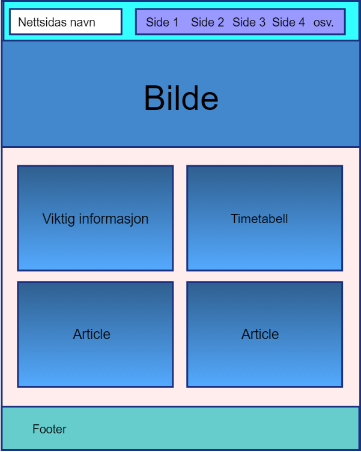
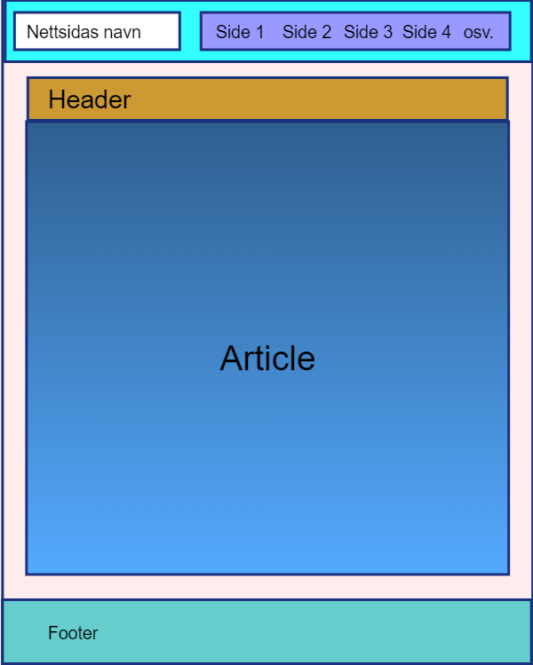

Om siden
Denne siden ble lagd for å besvare på Oblig 2 i Webutvikling.
Det første jeg gjorde når jeg lagde denne siden var å planlegge layouten. Første del av planleggingen gjorde jeg i hodet, da bare tenkte
jeg på andre nettsider og hvordan de for eksempel har løst forskjellige problemer. Et eksempel på dette er menyen og partiet SV sitt hjemmsted.
Den bruker også position:fixed. Etter dette begynte jeg og lage en strukturskisse (wireframe), som ser slik ut:


Under ligger en tabell med nettsider jeg har brukt som inspirasjon:
| URL | Beskrivelse |
|---|---|
| SV-hjemmenettsted | Navigasjonen i toppen |
| Keyzo | Overskrift og navigasjon på samme linje |